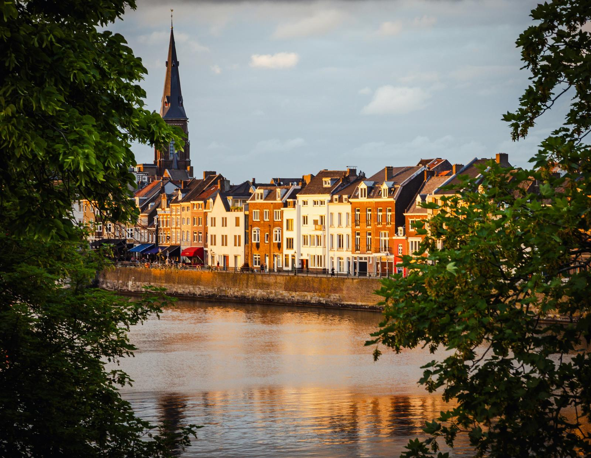
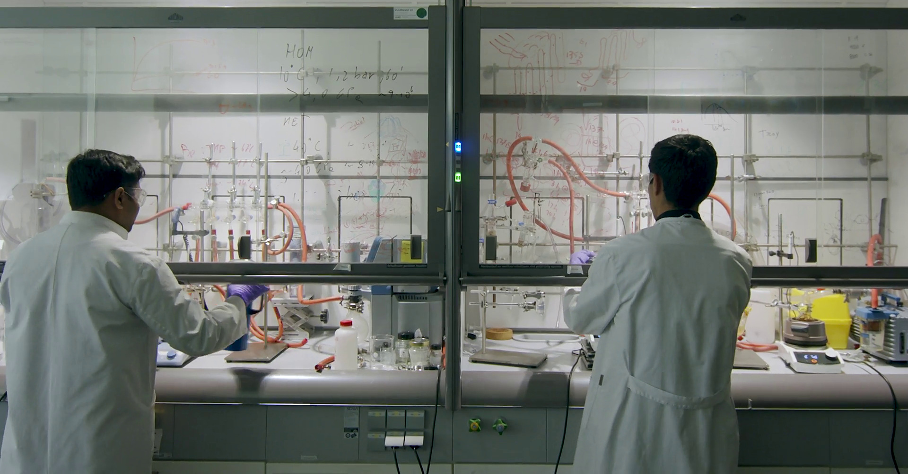

After the Maastricht Science Programme

Where they study next
Under each name: how many MSP graduates went on to study there.

Pick what you love
At MSP you build your own programme. Choose a direction and see where graduates took it for their master’s.
And after that